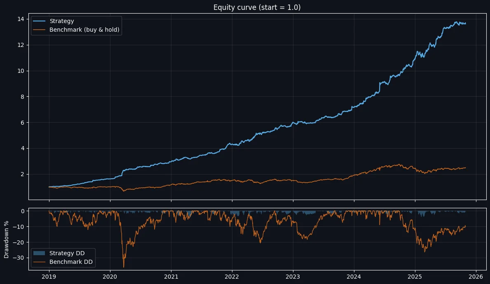

Hawkes intraday momentum on NIFTY Next 50
An intraday long/short strategy that trades only when volatility bursts. I built it on NIFTY 50, then ran the same rules on the higher-beta NIFTY Next 50, where it performed even better.

Thesis
Volatility bursts bring directional moves. When activity on an index suddenly clusters, the move that follows tends to persist; when activity is flat, price action is mostly noise.
The edge first showed up on NIFTY 50. Because the idea feeds on volatility, the natural test was a more volatile index with the same rules and no re-tuning. On NIFTY Next 50 every headline number improved. That is evidence the signal is structural rather than fitted to one series.
Method
- Bar energy. Each bar's range is normalised by its recent volatility and squared, so a bar scores high only when it is unusually active for that moment.
- Hawkes intensity. Energy feeds an exponential-decay accumulator,
λt = κ · Σ e−κ(t−s) xs. Bursts of activity excite λ; quiet bars let it decay. - Trade the jump. A position opens only when the change in λ exceeds a threshold taken from an expanding quantile of the day so far. The threshold never sees future bars.
- Direction and exit. A trend filter sets long or short; an ATR-based bracket with a trailing stop manages the exit.
How I would trade it
The statistics support trading it through index futures or ETFs, depending on a desk's preference for leverage and liquidity. Both sides contribute: shorts and longs each have a positive Sharpe on their own.
Full statistics
Backtest figures, net of modelled costs. Not live performance.
Performance
- CAGR
- 46.56%Benchmark 14.25%
- Total return
- 1,261.29%Benchmark 148.43%
- Sharpe
- 3.83Benchmark 0.80
- Sortino
- 8.96
- Calmar
- 10.98CAGR / max DD
- Max drawdown
- −4.24%Benchmark −36.17%
- Longest drawdown
- 69 days
Trade efficiency
- Trades
- 2,325~26.3 per month
- Win rate
- 50.5%1,173 / 2,324
- Profit factor
- 1.83
- Payoff ratio
- 1.79+0.503% / −0.271%
- Average trade
- +0.114%
- Average hold
- 152 min
Long vs short
- Long trades
- 987Win 54.2% · Sharpe 2.14
- Short trades
- 1,290Win 46.1% · Sharpe 2.67
- Largest win
- +8.947%
- Largest loss
- −2.057%